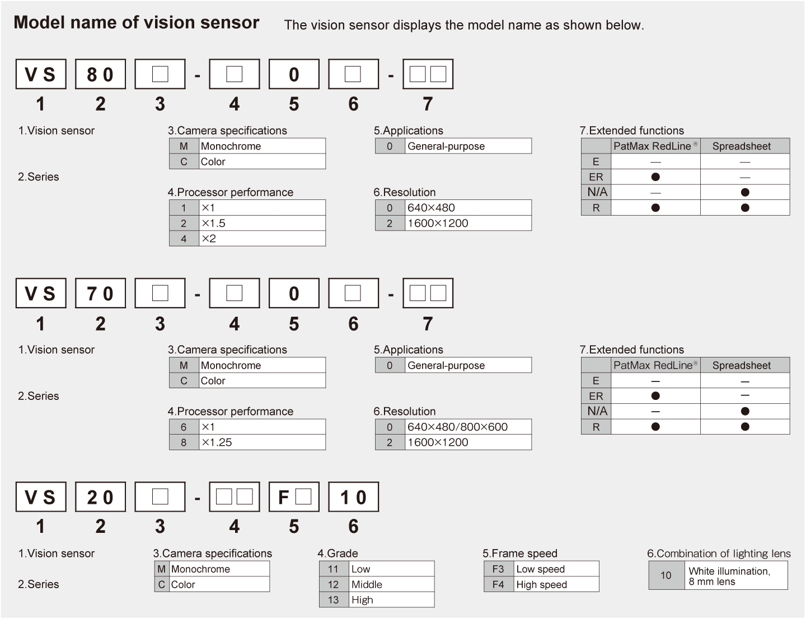

Vision Sensor Product list

| Type | Model | Outline |
|---|---|---|
| VS80 | VS80M-100-E | Monochrome, 640 x 480, processor performance x 1 |
| VS80M-100 | Monochrome, 640 x 480, processor performance x 1, spreadsheet is supported | |
| VS80M-200-E | Monochrome, 640 x 480, processor performance x 1.5 | |
| VS80M-200-ER | Monochrome, 640 x 480, processor performance x 1.5, PatMax RedLine® | |
| VS80M-200 | Monochrome, 640 x 480, processor performance x 1.5, spreadsheet is supported | |
| VS80M-200-R | Monochrome, 640 x 480, processor performance x 1.5, spreadsheet is supported, PatMax RedLine® | |
| VS80M-400-E | Monochrome, 640 x 480, processor performance x 2 | |
| VS80M-400-ER | Monochrome, 640 x 480, processor performance x 2, PatMax RedLine® | |
| VS80M-400 | Monochrome, 640 x 480, processor performance x 2, spreadsheet is supported | |
| VS80M-400-R | Monochrome, 640 x 480, processor performance x 2, spreadsheet is supported, PatMax RedLine® | |
| VS80M-202-E | Monochrome, 1600 x 1200, processor performance x 1.5 | |
| VS80M-202-ER | Monochrome, 1600 x 1200, processor performance x 1.5, PatMax RedLine® | |
| VS80M-202 | Monochrome, 1600 x 1200, processor performance x 1.5, spreadsheet is supported | |
| VS80M-202-R | Monochrome, 1600 x 1200, processor performance x 1.5, spreadsheet is supported, PatMax RedLine® | |
| VS80M-402-E | Monochrome, 1600 x 1200, processor performance x 2 | |
| VS80M-402-ER | Monochrome, 1600 x 1200, processor performance x 2, PatMax RedLine® | |
| VS80M-402 | Monochrome, 1600 x 1200, processor performance x 2, spreadsheet is supported | |
| VS80M-402-R | Monochrome, 1600 x 1200, processor performance x 2, spreadsheet is supported, PatMax RedLine® | |
| VS80C-100 | Color, 640 x 480, processor performance x 1, spreadsheet is supported | |
| VS80C-200-R | Color, 640 x 480, processor performance x 1.5, spreadsheet is supported, PatMax RedLine® | |
| VS80C-400-R | Color, 640 x 480, processor performance x 2, spreadsheet is supported, PatMax RedLine® | |
| VS80C-202-R | Color, 1600 x 1200, processor performance x 1.5, spreadsheet is supported, PatMax RedLine® | |
| VS80C-402-R | Color, 1600 x 1200, processor performance x 2, spreadsheet is supported, PatMax RedLine® | |
| VS70 | VS70M-600-E | Monochrome, 640 x 480/800 x 600, processor performance x 1 |
| VS70M-600-ER | Monochrome, 640 x 480/800 x 600, processor performance x 1, PatMax RedLine® | |
| VS70M-600 | Monochrome, 640 x 480/800 x 600, processor performance x 1, spreadsheet is supported | |
| VS70M-600-R | Monochrome, 640 x 480/800 x 600, processor performance x 1, spreadsheet is supported, PatMax RedLine® | |
| VS70M-800-E | Monochrome, 640 x 480/800 x 600, processor performance x 1.25 | |
| VS70M-800-ER | Monochrome, 640 x 480/800 x 600, processor performance x 1.25, PatMax RedLine® | |
| VS70M-800 | Monochrome, 640 x 480/800 x 600, processor performance x 1.25, spreadsheet is supported | |
| VS70M-800-R | Monochrome, 640 x 480/800 x 600, processor performance x 1.25, spreadsheet is supported, PatMax RedLine® | |
| VS70M-802-E | Monochrome, 1600 x 1200, processor performance x 1.25 | |
| VS70M-802-ER | Monochrome, 1600 x 1200, processor performance x 1.25, PatMax RedLine® | |
| VS70M-802 | Monochrome, 1600 x 1200, processor performance x 1.25, spreadsheet is supported | |
| VS70M-802-R | Monochrome, 1600 x 1200, processor performance x 1.25, spreadsheet is supported, PatMax RedLine® | |
| VS70C-600-R | Color, 640 x 480/800 x 600, processor performance x 1, spreadsheet is supported, PatMax RedLine® | |
| VS70C-800-R | Color, 640 x 480/800 x 600, processor performance x 1.25, spreadsheet is supported, PatMax RedLine® | |
| VS70C-802-R | Color, 1600 x 1200, processor performance x 1.25, spreadsheet is supported, PatMax RedLine® | |
| VS20 | VS20M-11F310 | Monochrome, 640 x 480 (standard), processor performance x 1 |
| VS20M-12F410 | Monochrome, 640 x 480 (standard, 2 x image magnification), processor performance x 2 | |
| VS20C-12F410 | Color, 640 x 480 (standard, 2 x image magnification), processor performance x 2 | |
| VS20M-13F410 | Monochrome, 640 x 480 (standard, 2 x image magnification)/800 x 600 (image magnification x 2), processor performance x 2 | |
| VS20C-13F410 | Color, 640 x 480 (standard, 2 x image magnification)/800 x 600 (image magnification x 2), processor performance x 2 |
